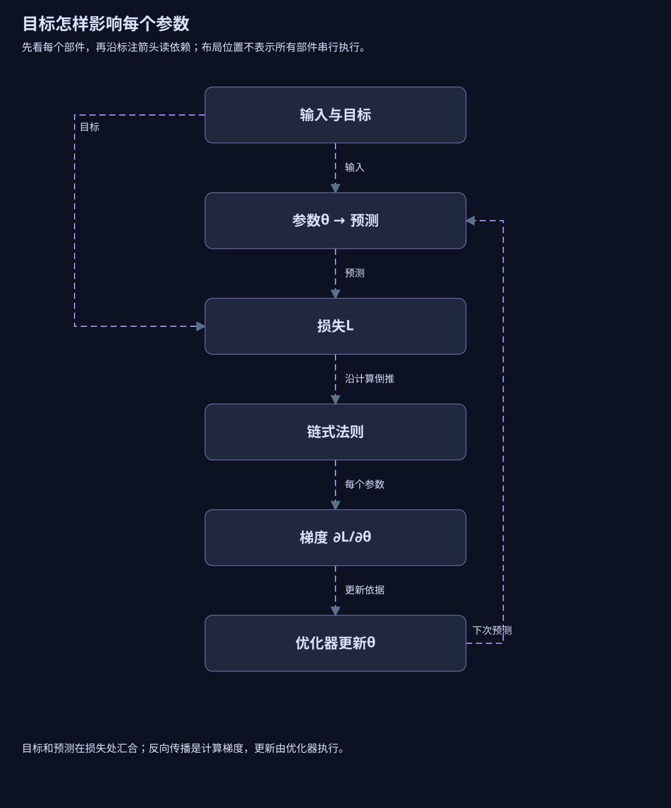

第9课 / 14课
损失与反向传播
模型怎样知道该改哪里？损失定义这次预测错得多远，反向传播沿计算图求每个参数的梯度。这里要区分“计算修改方向”和“实际执行修改”。
读图前，先认本课的新词
| 术语 | 输入 → 输出 | 解决什么问题 |
|---|
| 损失loss | 预测与目标→一个评价数字 | 把这次错得多远写成训练目标 |
| 交叉熵 | 正确片段的预测概率p→−ln(p) | p越小罚得越重；ln是自然对数 |
| 梯度gradient | 损失对各参数的变化率→一组数 | 表示局部敏感程度，不是更新后的参数 |
| 反向传播 | 计算图与损失→各参数梯度 | 按链式法则倒着求梯度 |
| 链式法则 | 连续计算的局部变化率→整条链变化率 | 多段影响沿路径相乘；多条路径贡献相加 |
先按这张表，把过程走一遍
先把“错了多少”变成一个数
| 步骤 | 饮料估价例 | 在训练里叫什么 |
|---|
| 给输入 | 2杯，暂估每杯5元 | 输入x=2，参数w=5 |
| 做预测 | 预测总价2×5=10元 | 前向计算ŷ=wx |
| 看目标 | 实际账单12元 | 目标y=12 |
| 算差距 | 预测低估2元 | 误差ŷ−y=−2 |
| 算损失 | 平方差(10−12)²=4 | 损失L：评价当前预测 |
| 求修改方向 | w稍增，总价靠近12 | 梯度dL/dw=2×(10−12)×2=−8 |
| 执行一次修改 | 步长0.1：5−0.1×(−8)=5.8 | 优化器更新参数 |
| 重新预测 | 2×5.8=11.6，平方差0.16 | 核对更新结果 |
先预测，再操作先把“梯度”理解成损失对参数微小变化的敏感程度。它是修改依据，不是已完成修改。下方交叉熵实验换成概率预测目标，别与饮料价格混为一个模型。
“梯度−8”不是猜出来的：先用试一试的方法看
仍用2杯饮料、账单12元的例子。只把暂估单价w改一点，其他条件保持不变。
| 暂估单价w | 预测总价2w | 与12的差 | 平方损失 |
|---|
| 5.00 | 10.00 | −2.00 | 4.0000 |
| 5.01 | 10.02 | −1.98 | 3.9204 |
| 4.99 | 9.98 | −2.02 | 4.0804 |
单价增加0.01，损失约减少0.08，因此这一小段的“损失变化÷参数变化”约是−8。改动越小，就越接近当前位置的导数。梯度把各个参数的这种局部变化率放到一起；这里仅有一个参数。
反向传播怎样把两段影响接起来？
| 影响链 | 本例的局部变化率 | 含义 |
|---|
| 单价w → 总价ŷ=2w | 2 | 单价每增加一点，总价按两杯放大两倍 |
| 预测总价ŷ → 平方损失(ŷ−12)² | 2×(10−12)=−4 | 当前总价略增，会让平方损失下降 |
| 把两段连接 | 2×(−4)=−8 | 链式法则：沿计算链把局部影响相乘 |
反向传播按这种链式关系，从损失往前计算参数的梯度，避免对每个参数都分别试一次。它先给出“怎么改”的依据；真正把w从5改到5.8，是后面的更新动作。
对照结构图，继续看原理与实验

先找输入，再沿箭头读输出。点击大图查看。3.2 损失函数：把目标变成可优化的数字
把推荐故事中的“点开了”写成标签1，模型先给出一个概率。下面的交叉熵就是这次预测的罚分：真正点开时，模型事先给的概率越小，罚得越重。先弄懂它罚的是什么，再看它没有衡量什么。
损失函数把预测与训练目标的差异压缩成标量；优化器通过这个数字及其梯度更新参数。
把刚才的直觉一步步算出来
原视频的关键例子是点击率预测。二元交叉熵为 −[y ln p+(1−y)ln(1−p)]。若真实点击y=1，p=0.2时损失−ln0.2≈1.609；p=0.8时约0.223。优化让模型更准确地预测点击，但点击可能来自好奇、标题诱导或其他原因，不自动代表满意。
视频接着讨论多目标损失L=αL_click+βL_satisfaction。当β=0时，满意度项不会通过这一个加权项贡献梯度；这不等于模型在任何其他路径上都完全没有满意度信息。关键是把真正想优化的目标显式定义并评估。
先把训练目标说清楚。语言模型对每个位置输出整个词表的概率分布，训练文本给出该位置实际出现的token。最常见目标会提高这个目标token的概率，而不是直接给完整回答打“真实”分。
对正确token概率p，L=−ln p。p=0.1时约2.303，p=0.5时约0.693，p=0.9时约0.105。对一段文本可按有效位置求平均，padding等不参与的token需屏蔽；具体归约方式会影响数值。
不能只盯损失大小：不同词表、不同数据分布、不同长度处理下不一定可直接比较。预训练损失降低也不代表每道问答都更正确。验证集、任务评估与事实检查分别回答不同问题。
换你试一次：先猜，再算
两处目标token概率分别为0.5和0.25，平均负对数似然是多少？对应困惑度是多少？
参考答案与计算结果
平均损失(0.6931+1.3863)/2≈1.0397；困惑度exp(1.0397)≈2.828。
这个类比帮到哪里，停在哪里
损失低只说明更符合所设定目标，不自动等于事实正确、对用户有帮助或安全。
关联视频 · 本文为教学改写，非逐字转录。
先预测，再动手
先记下当前输出；只改一个条件，观察数值与图形怎样变化，再用本课过程解释原因。
用一道题检查是否懂了
反向传播结束时，参数一定已更新吗？
答案与理由
不一定。反向传播先计算梯度，优化器再消费梯度执行更新。
把过程讲回来
请回答：模型怎样知道该改哪里？说出中间至少两个步骤，并指出一个本课方法不能保证的事情。
回答核对
损失定义这次预测错得多远，反向传播沿计算图求每个参数的梯度。这里要区分“计算修改方向”和“实际执行修改”。
查看对应来源专题、完整算例与代码 →